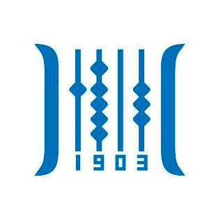

安徽商贸职业技术学院 iOS Club 始建于2019年3月，隶属于安徽商贸职业技术学院电子信息工程系，是国内少数在移动互联应用技术专业专注于 iOS 开发的院校，同时该专业也是国家骨干建设专业。俱乐部汇聚了全校各专业的 iOS 开发爱好者，下设 iOS 开发组、 UI 设计组、商业营销组等部门。俱乐部成立以来，以 iOS 开发兴趣引导实验室为专用学习、工作场所，实验室配备了多台最新的苹果电脑和 iPad ，设施一流；俱乐部成员以终身学习为理念，以创新为灵魂，积极投身于 iOS 移动应用开发，以青春热情为伴，与俱乐部一起成长，在实践中进步，在交流中获益，进而打造出一支有活力、有技术、有传承的创新团队。
指导老师
刘斌
邮箱
liubin@abc.edu.cn